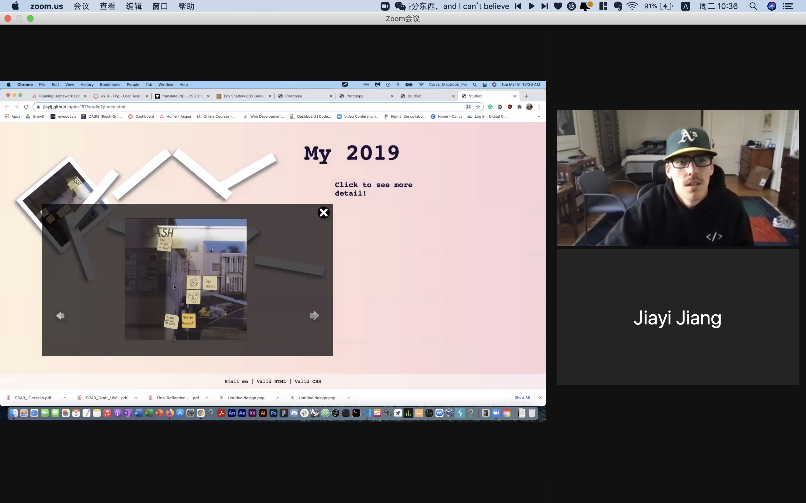
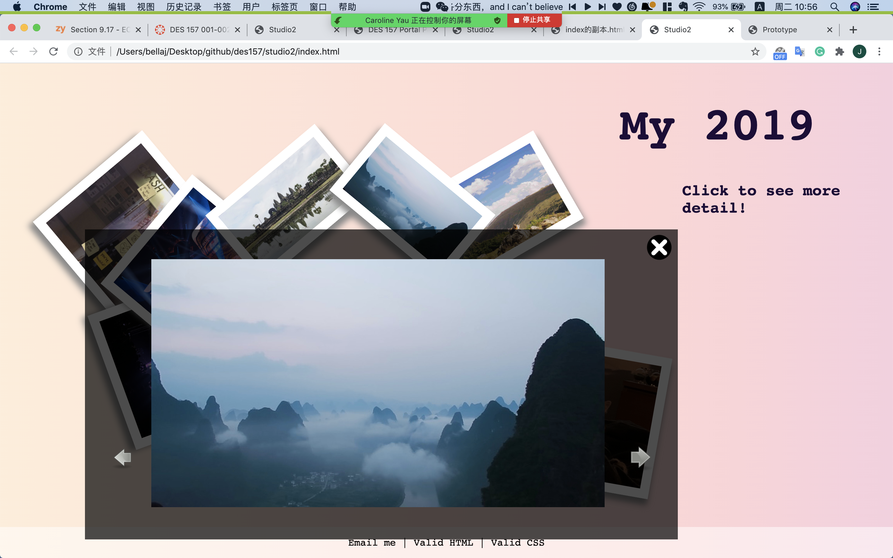
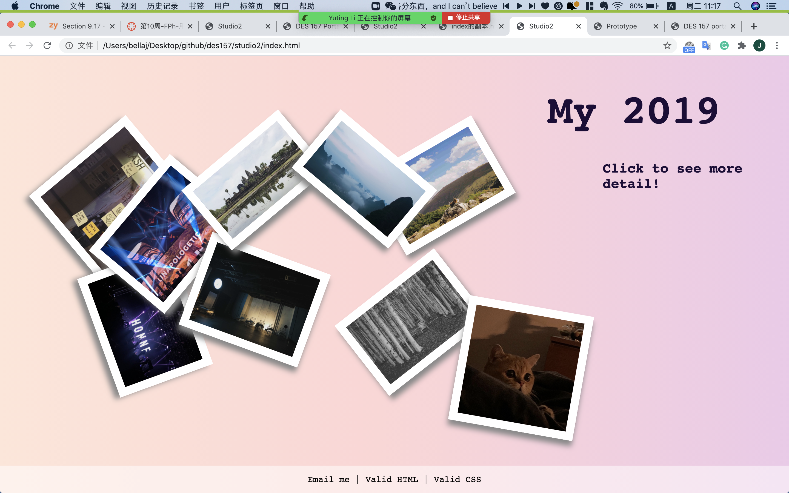

User Test Results
One of the main issues my classmates had while testing my site was not knowing the images on each page were clickable. They thought I can add an introduction at top of the page.
The navigation is intuitive, but there can be a more cute design.
I asked the question about how to making my site more cohesive, I got some comment included adding sound or subtle background on the home page, and change the photo details part move to the center
I would probably also fill in the text to the introduction of the photo.
  